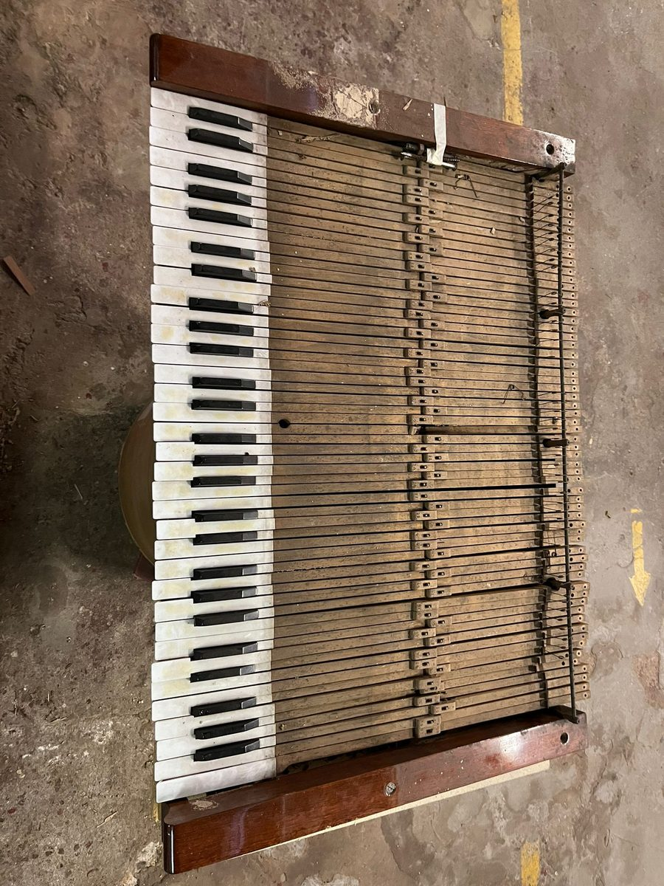
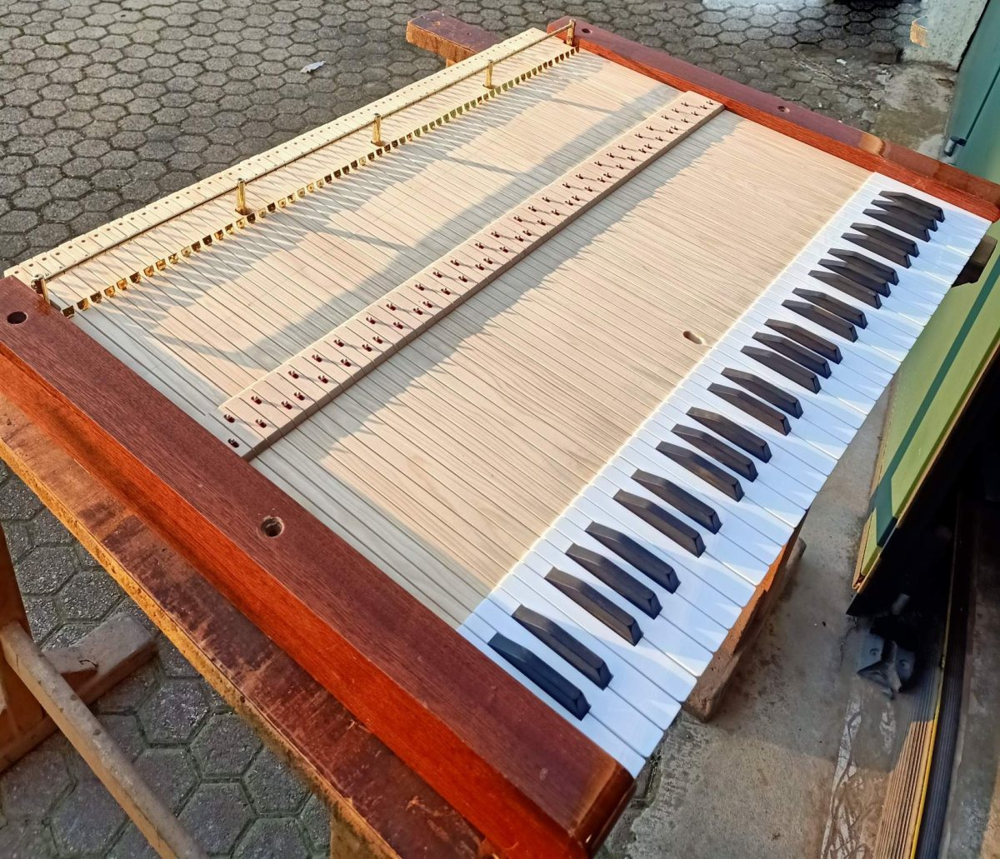

Recupero di tastiere antiche e consumate dal tempo: nuove coperture, riparazione di leve e bilancieri, pulizia o sostituzione delle punte e riparazioni in genere.
In base allo stato della tastiera e alle esigenze del cliente, effettuiamo il restauro delle tastiere già esistenti, sostituendo componenti, guarnizioni, coperture, punte o altri elementi.
Affrontiamo il restauro nel rispetto della costruzione originale del componente, intervenendo, dove possibile, in modo conservativo.


Costruzione tasti mancanti e restauro tastiera
È possibile sbiancare e rendere lucentezza alle antiche tastiere in avorio, oppure valutare sostituzioni parziali o complete dei componenti.